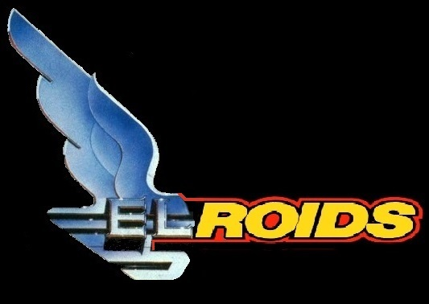

The ship is made up of a number of 'components' (Engines, weapons etc.)
Each component starts with a number of 'hit points' indicating how tough it is. It also has a 'status' indicating the percentage of these hit points that remain.
This does mean that, technically, a compoent can have a non integer (maxHP * status) number of hit points.
When the ship is damaged it is distributed randomly between the ships components. Their 'status' (percentage) is reduced.
For details of how status loss effects each component type see 'components' page.
Damaged components can be repaired via the 'Ship Component Menu'.
There is a cost, in credits, dependand on the components original cost and how much damage needs to be repaired.
There is only so much that can be patched up, in flight, with glue and baling twine! If the ship is not docked at a station:
Damage for a class of components can be repaired either 10% at a time or the maximum possible can be done in one go.
If you do not have enough credits damage will only be partially repaired.
Stations cannot repair components beyond their own tech level ... Patch it in flight and go somewhere that knows how it works.